Kolej Tun Razak

16 Oktober 2026 · Kem Pembentukan JKP

← → / Space: navigasi · Home / End · F: skrin penuh · P: penyampai · N: nota · Esc: keluar skrin penuh
Letakkan tetingkap ini pada skrin peribadi. Paparkan tetingkap slaid pada projektor. Kedua-duanya mesti dibuka daripada alamat dan pelayar yang sama.